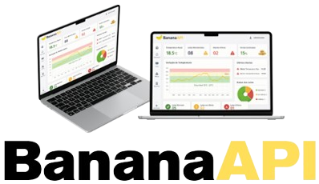
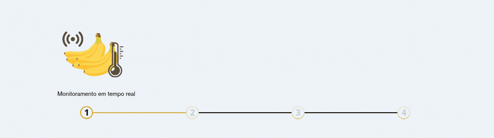

Alto desperdício de bananas devido ao armazenamento inadequado nos entrepostos.
Variações de temperatura comprometem a qualidade, aparência e aceitação da fruta pelo consumidor.
Falta de monitoramento térmico impede o controle eficiente do amadurecimento.
Temperaturas fora do ideal aceleram ou prejudicam o amadurecimento da banana nanica.
Perdas podem chegar a 20%, impactando diretamente o lucro e a distribuição.

O BananaAPI é uma solução IoT inteligente desenvolvida para transformar o monitoramento de temperatura em entrepostos de banana. Utilizando sensores integrados ao Arduino, o sistema monitora dados em tempo real, analisa variações críticas e exibe tudo em um dashboard intuitivo. Além disso, envia alertas automáticos diante de riscos, permitindo decisões rápidas, reduzindo desperdícios e protegendo diretamente o lucro e a qualidade do produto.
